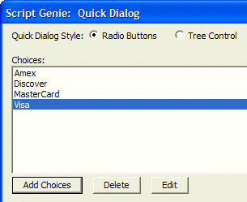
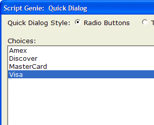

Default Font for Xdialog
The View > Settings > System Fonts dialog allows you to set the font for Dialog Boxes that are created using Xdialog. You can choose any font, and font sizes between 8 and 12 point.
Since many of the dialog boxes that appear when you use Alpha Anywhere are created using Xdialog, this setting will affect many of Alpha Anywhere's dialog boxes (such as the Query Genie and Toolbar Editor.) By increasing the font for dialog boxes from the default "Tahoma,8" to (say) "Tahoma,10", you can increase the size of many of Alpha Anywhere's dialog boxes. This will make Alpha Anywhere easier to use for vision impaired users. Compare two sections of the Quick Dialog screens shown belong. Both have the same pixel resolution. The version using the larger font produces a larger dialog box.
 
The default font for dialog boxes in Alpha Five Version 5 and Above was Arial,8. This is now changed to Tahoma,8. If you prefer the Alpha Five Version 5 default font, change the dialog font on the View > Settings > System Fonts dialog box.